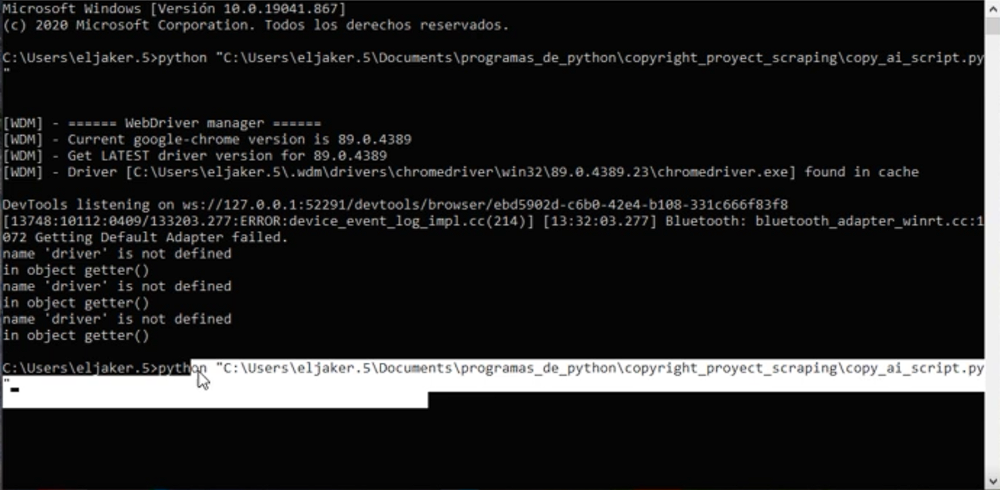
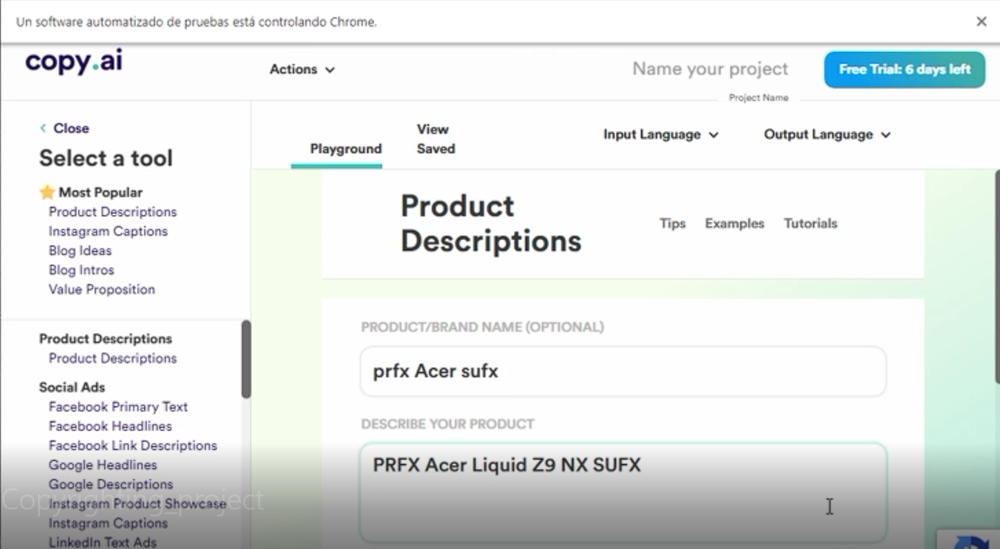
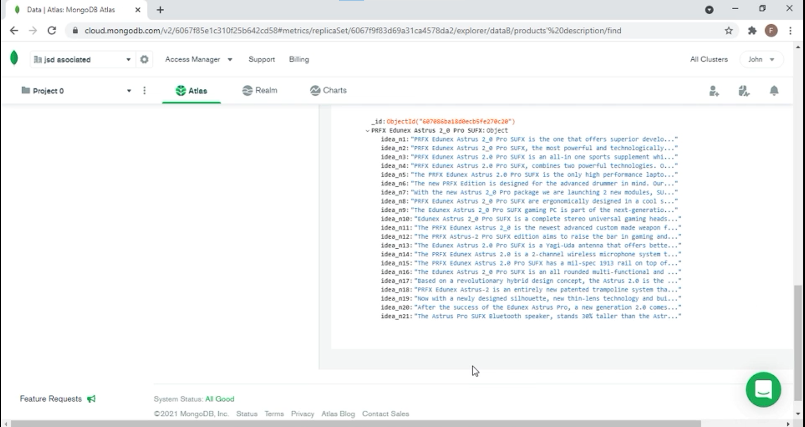

Copy.ai Automated Bot
This is a Python/Selenium based program that automates the act of retrieving descpritions from Copi.ai webpage (a webpage dedicated to create descriptions for any kind of thing the user wants to generate a description for), where the client only has to log in and the programm will submit all the necesary data to get descriptions and afterwards, retrieve them and store them into a Mongo data base.
The program works this way: The client has to put all the parameters of their mongo database in the code, also some parameters to make more specified descriptions (in this case, this parameters are replaced by "prfx" and "sufx" as an example), next they have to excecute the code (in this case directly in the CMD).
The program starts and gets to the login page, where the client has to log in themselves and click the "log in" button in the mail that copy.ai sends them to log in.
Next the program will writte the descriptions and parameters given by the client (in this case the data is located in a JSON file) in the proper fields, once for each product the client wants to get a description for.
Once all the descriptions of the product or thing are retrieved they are sent to a MongoDB data base, and the same process starts over for each one of the products.
